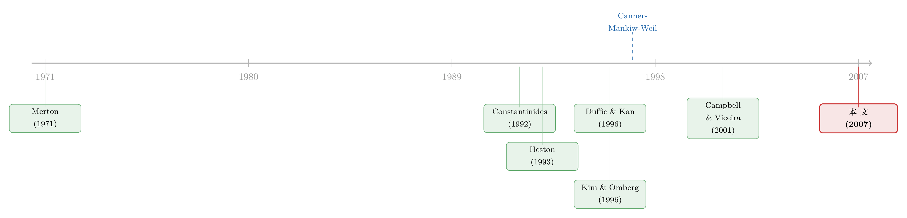

把投资组合的「天书」解到只剩一个常微分方程
本文读的是 Liu (2007, Review of Financial Studies)：当资产收益是「二次的」(quadratic)、投资者是 CRRA 偏好时，动态投资组合问题可以被显式求解到只剩一个常微分方程。这个看似技术性的结论，一口气把过去三十年散落在各处的特解装进同一个盒子，还顺手补上了利率为正 (CIR)、波动率随机 (Heston) 这两块以前解不动的拼图——并给出了三个相当反直觉的资产配置结论。
1 引言：一个被「解不出来」困住三十年的框架
先从一个让人有点尴尬的事实说起。
动态投资组合选择 (dynamic portfolio choice) 这门学问，地基是 Merton (1971) 打下的。他用随机控制 (stochastic control) 的语言，把「一个会变老、会消费、还要面对随时间变化的投资机会」的投资者，写成了一个干净的最优化问题。框架是漂亮的，思想是深刻的——可问题在于，它几乎解不出来。
为什么解不出来？因为 Merton 框架里，最优的投资组合权重，是一个非线性偏微分方程 (nonlinear partial differential equation, PDE) 的解。而一般的非线性 PDE 没有闭式解。于是一个尴尬的局面出现了：我们有了全世界最优雅的理论框架，却在大多数现实设定下，连「投资者到底该买多少股票」这个最朴素的问题都算不出一个公式来。
接下来的三十年，文献基本上是沿着两条路在突围。
第一条路是「近似」。 既然精确解没有，那就退而求其次。Kogan and Uppal (2000) 做渐近展开，Campbell and Viceira (2001)、Chacko and Viceira (2005) 用对数线性化 (log-linearization)。这些方法很有用，但本质上是在「逼近」那个解不出来的真值，精度和适用范围都要打折扣。
第二条路是「特解」。 在某些非常特殊的设定下，精确解是存在的：Kim and Omberg (1996)、Brennan (1998)、Brennan and Xia (2000, 2001)、Wachter (2003)、Sangvinatsos and Wachter (2005)。但你仔细看会发现，这些研究有一个共同的、藏在脚注里的妥协：它们都假设资产收益的波动率是常数，而短期利率和/或风险溢价服从 Ornstein–Uhlenbeck (OU) 过程。
OU 过程很好用，因为它是线性的、可以解。可它有一个致命的副作用：OU 过程允许变量取负值。也就是说，在这些模型里，短期利率可以是负的，风险溢价也可以是负的。这在数学上无所谓，但在经济上是个隐患——后面我们会看到，它甚至会污染人们对结论的解读。
于是，一个自然的问题是：有没有一类足够宽、宽到能装下利率为正、波动率随机这些现实特征，却又恰好窄到仍然可以被显式求解的资产收益模型？
这正是 Liu (2007) 的全部故事。他给这类模型起了个名字，叫二次收益 (quadratic returns)；给驱动它的状态过程起名叫二次过程 (quadratic process)。而他证明：只要资产收益是二次的、投资者是 CRRA 偏好，那个困住大家三十年的非线性 PDE，就能被求解到只剩一个常微分方程 (ordinary differential equation, ODE)。
ODE 是什么概念？是你打开数值软件、敲几行代码就能跑出来的东西。换句话说，他把「天书」翻译成了「查找表」。
2 一张写在「随机环境」里的投资网
在进入数学之前，先把这篇论文的世界观讲清楚，因为它本身就很有启发性。
Liu 的洞察是：在动态投资组合的语境下，整个投资机会集 (investment opportunity set)，其实只由资产收益动态的四个特征完全刻画——
- 短期利率 (short rate)
r； - 最大平方夏普比率 (maximal squared-Sharpe ratio) \((\mu-r)^\top(\sigma\sigma^\top)^{-1}(\mu-r)\)；
- 对冲协方差向量 (hedging covariance vector)——即均值-方差有效组合与各「对冲组合」之间的协方差；
- 未跨越协方差矩阵 (unspanned covariance matrix)——即状态变量中那部分无法被资产协方差所复制的风险。
所谓「二次收益」，说白了就是：上面这四个特征，全都是某个二次过程的二次函数。
这个定义看起来抽象，但它的威力在于「包容性」。二次过程同时把仿射过程 (affine process) 和 OU 过程都纳为特例。而二次收益这一类，又自然涵盖了文献里最常见的几种设定：仿射期限结构模型里零息债的收益 [Duffie and Kan (1996)]、风险溢价服从 OU 过程的股票收益、以及 Heston (1993) 随机波动率模型里的股票收益。
这里有一个很「石川」的类比值得记住：为投资者求最优策略的 PDE，和给一张零息债定价的 PDE，长得几乎一模一样。 这不是巧合——正是这个结构上的同构，让 Liu 能把债券定价里成熟的解析工具，直接搬到投资组合问题上来。（关于「把利率曲线拆解成几个可解的成分」这种思路，可参见《把利率曲线拆成三个人：稳态、习惯、与期待》。）
3 核心模型：从 HJB 到一个指数-二次的猜测
这是一篇彻头彻尾的理论论文，它的全部价值都在推导里。所以这一节我们一步一步来，把「为什么能解」讲透。
3.1 设定
市场上有一只无风险资产 P_0 和 M 只风险资产。它们的价格满足：
$$\frac{dP_{0t}}{P_{0t}} = r(X_t)\,dt,\qquad \frac{dP_{it}}{P_{it}} = \mu_i(X_t)\,dt + \sigma_i(X_t)\,dB_t,\quad i=1,\dots,M.$$
这里 B 是 M 维标准布朗运动。关键在于 r、μ、σ 都不是常数，而是一个 N 维状态变量向量 X 的函数。状态变量自己也在随机地动：
$$dX_t = \mu^X dt + \sigma^X dB^X_t. \tag{1}$$
X 可以是 CIR 模型里的随机短期利率，可以是可预测性研究里的股息率，也可以是随机波动率模型里的波动率过程。dB^X 与 dB 之间的相关结构由矩阵 ρ 刻画——这一点至关重要，它是「对冲需求」存在的根源。
投资者要最大化的，是同时定义在中间消费和终端财富上的期望效用：
$$E_0\!\left[\int_0^T \lambda\, e^{-\beta t}\frac{C_t^{1-\gamma}}{1-\gamma}\,dt + (1-\lambda)\,e^{-\beta T}\frac{W_T^{1-\gamma}}{1-\gamma}\right], \tag{2}$$
其中 γ 是相对风险厌恶系数 (CRRA coefficient)，β 是主观贴现率，λ 调节中间消费与遗赠的相对重要性。当 λ = 0 时，效用只取决于终端财富，问题退化为纯粹的资产配置问题。财富 W 的动态遵循自融资约束：
$$dW_t = W_t\big[\pi_t^\top(\mu - r) + r\big]dt - C_t\,dt + W_t\,\pi_t^\top \sigma\, dB_t.$$
3.2 HJB 与那个关键的猜测
按 Merton 的套路，令 J(t,W,X) 为间接效用函数 (indirect utility function)，最优性原理给出 Hamilton–Jacobi–Bellman (HJB) 方程：
$$\max_{\pi,C}\Big\{ \tfrac{\partial J}{\partial t} + \tfrac12 W^2\pi^\top\sigma\sigma^\top\pi\, J_{WW} + W\big[\pi^\top(\mu-r)+r\big]J_W - C J_W$$ $$+\, W\pi^\top\sigma\rho^\top\sigma^{X\top}J_{WX} + \tfrac12\mathrm{Tr}\!\big(\sigma^X\sigma^{X\top}J_{XX^\top}\big) + \mu^{X\top}J_X + \lambda e^{-\beta t}\tfrac{C^{1-\gamma}}{1-\gamma}\Big\}=0. \tag{3}$$
直接解这个东西是没有希望的。Liu 的第一步，是沿用 CRRA 效用的经典技巧——猜一个形式：
$$J(t,W,X) = e^{-\beta t}\,\frac{W^{1-\gamma}}{1-\gamma}\,f(X,t)^\gamma. \tag{4}$$
为什么这个猜测合理？因为 CRRA 效用对财富是齐次的，间接效用必然把财富那部分 \(W^{1-\gamma}\) 单独拎出来；剩下所有跟「投资机会好不好」相关的信息，都被压缩进了那个标量函数 f(X,t) 里。f 就是投资者对状态变量 X 的全部「态度」。
把猜测代回 HJB，做一阶条件，最优消费和最优组合就掉了出来：
$$C^* = \lambda^{1/\gamma}\,W\,f^{-1}, \tag{5}$$
而投资组合权重 (6) 长这样——这是全文的心脏，我们用一张带标注的图把它拆开看：
第一项是教科书里那个熟悉的均值-方差组合，一个只有单期视野的投资者就会这么配。真正让动态问题区别于静态问题的，是第二项。∂ln f/∂X 度量了间接效用对投资机会的敏感度——当状态变量 X 变动会让未来投资环境变差时，投资者会主动持有那些与 X 高度相关的资产来「上保险」。这就是 Merton 跨期对冲需求的精确表达。（关于跨期对冲、尤其是「会怕波动率」这颗心，可参见《市场之外，长期投资者还在怕什么？——给 CAPM 装上第三颗「会怕波动」的心》。）
3.3 PDE 塌缩成 ODE：真正关键的一步
把 (4)(5)(6) 代回 (3)，一切就归结为求解 f 所满足的 PDE。在完全市场下，非线性项会消失，问题进一步简化为求解一个关于 \(\hat f\) 的线性 PDE (8)，其核心结构是：
$$\frac{\partial \hat f}{\partial t} + \tfrac12\mathrm{Tr}\!\big(\sigma^X\sigma^{X\top}\hat f_{XX^\top}\big) + \Big[\mu^X + \tfrac{1-\gamma}{\gamma}\sigma^X\rho\,\sigma^{-1}(\mu-r)\Big]^\top \hat f_X + (\cdots)\,\hat f = 0.$$
接下来是全文最漂亮、也最关键的一步。Liu 提出一个猜测：
$$\hat f(t,X) = \exp\!\Big(c(t) + d(t)^\top X + \tfrac12 X^\top \Phi^\top Q(t)\,\Phi X\Big). \tag{$\star$}$$
这是一个指数-二次 (exponential-quadratic) 的形式：指数里既有 X 的线性项，又有 X 的二次型。他随即证明：只要 PDE 的所有系数都是 ΦX 的二次函数、X 的线性函数（在若干参数约束下），那么 \((\star)\) 就恰好是这个 PDE 的解。
为什么？因为把 \((\star)\) 代进 PDE 后，左边每一项至多是 ΦX 的二次、X 的线性（乘以一个 \(\hat f\) 因子）。而方程要对所有 X 都成立，这就逼着这些项的系数必须逐一为零。于是——
- 二次项系数为零 ⟹ 一组关于矩阵函数
Q(t)的 ODE； - 一次项系数为零 ⟹ 一组关于向量函数
d(t)的 ODE； - 常数项系数为零 ⟹ 一个关于标量
c(t)的 ODE。
PDE 就这样被「降维」成了几个 ODE。这就是「显式解到一个 ODE」的全部含义。 它和仿射期限结构模型里 Riccati 方程那套机制，是同一种数学魔法。
3.4 钥匙：什么是二次过程
那么，到底什么样的状态过程能让上面这套机制成立？答案就是二次过程。Liu 要求状态向量 X 的漂移和扩散系数本身都是自己的二次函数：
$$\mu^X = k - KX + \tfrac12 X^\top\Phi^\top\!\cdot K_2\cdot \Phi X, \tag{9}$$
$$\sigma^X\sigma^{X\top} = h_0 + h_1\cdot X + X^\top\Phi^\top\!\cdot h_2\cdot \Phi X, \tag{10}$$
并施加参数约束：
$$K^\top\Phi^\top = \Phi^\top\hat K,\quad K_2\Phi^\top = 0,\quad h_1\Phi^\top = 0,\quad h_2\Phi^\top = 0. \tag{11}$$
这组约束 (11) 不是凭空来的，它有一个非常具体的作用：它保证 ΦX 是一个多元 OU 过程。 直觉上，Φ 像一个「过滤器」，它把状态向量 X 投影到一个表现得像 OU 过程的子空间上；而 X 本身可以同时携带仿射过程（保证利率、波动率为正）和 OU 过程（Constantinides 1992 的二次高斯结构）两种成分。
二次过程的两个特例，正好把整个文献串了起来：
- 当
Φ = 0（等价于K_2 = 0、h_2 = 0），二次项消失，二次过程退化为 Duffie and Kan (1996) 的仿射过程； - 当
Φ = I、h_2 = 0、K_2 = 0，二次过程退化为多元 OU 过程——也就是前面那一整代「特解文献」赖以为生的设定。
换句话说，过去三十年所有那些散落的精确解，全都是这个二次框架的特例。这就是 Liu 这篇论文的统一力量所在。
4 三个应用：把利率、波动率一次性请进来
光有抽象框架还不够。Liu 给出三个文献里没有过的具体应用，来证明这套机器真能转。
应用一：债券组合。 他先构造了「二次期限结构模型」(quadratic term structure models)，它同时嵌套了 Constantinides (1992) 的二次高斯模型和 Duffie and Kan (1996) 的仿射模型。用这个无套利模型导出各期限零息债的收益，再求解组合问题。对 Cox–Ingersoll–Ross (CIR) 这个特例，零息债的组合权重甚至有完全闭式解。CIR 的好处是它保证短期利率严格为正——这正是 OU 类模型做不到的。
应用二：股票组合 + 随机波动率。 当股票收益的波动率服从 Heston (1993) 模型时，求解最优股票组合。这里有一个关键点：Heston 模型里的风险溢价是严格为正的。这个性质后面会用来「证清白」。
应用三：股票 + 债券，且利率随机、波动率也随机。 这是最完整的设定：股票同时承受 CIR 描述的利率风险和 Heston 描述的波动率风险。借助下面要讲的「分离定理」，债券和股票的组合权重可以分别用 CIR 和 Heston 两个子问题的解拼出来。
5 三个反直觉的结论
显式解最大的好处，是能让你看清那些被近似解模糊掉的细节。Liu 报告了三个动态组合权重区别于静态权重的性质，每一个都值得停下来想一想。
结论一：即使风险溢价严格为正，动态组合权重也可能为负。
这话听起来荒谬——风险溢价是正的，凭什么要做空？在 Kim and Omberg (1996)、Brennan and Xia (2001) 里，动态权重确实也能为负，但你无法判断那个负号到底是「动态对冲」造成的，还是仅仅因为他们模型里的风险溢价（OU 过程）本身可以取负值。这正是 OU 设定埋下的解读隐患。
而在应用二里，Heston 的风险溢价是严格为正的。所以一旦组合权重出现负号，就只能有一个解释：它纯粹来自动态对冲需求。这是第一次，有人能干净利落地把「负权重」归因到动态本身，而不是归因到一个会取负值的风险溢价。这就是显式解、加上一个「风险溢价永远为正」的模型，所带来的识别上的清白。
结论二：即使风险溢价严格为正，动态组合权重也未必随风险厌恶递减。
静态直觉告诉我们：越怕风险，就该越少买股票。Kogan and Uppal (2000) 独立地指出过动态权重可能随风险厌恶上升，但 Liu 的例子更尖锐——因为他的风险溢价是严格为正的，排除了「负溢价捣乱」的可能。这意味着「越怕越少买」这条朴素规律，在动态世界里会失效。
结论三：债券与股票的组合权重之比，随风险厌恶上升而上升。
这个结论的分量在于它解决了一个著名的实证之谜。
6 分离定理与 Canner–Mankiw–Weil 之谜
Canner, Mankiw, and Weil (1997) 提出过一个「资产配置之谜」(asset allocation puzzle)：理财顾问普遍建议，越保守的投资者，债券相对股票的配置比例应该越高。但标准的静态均值-方差理论说，所有投资者持有的风险资产组合内部比例应该相同（两基金分离），与风险厌恶无关。理论和实务对不上。
Liu 的贡献是用一个内生于动态对冲需求的机制给出了解释。他先证明了一个分离定理 (separation result)：当「驱动利率的状态变量」与「只驱动股票收益的状态变量」相互独立时，债券-股票联合组合问题，可以分解成一个纯债券问题加一个纯股票问题。这让复杂应用三变得可解。
而在他的设定里，状态变量服从平方根过程 (square-root process, 即 CIR 那一类)，而非前人用的 OU 过程。在这套机制下，债券对股票的权重之比天然地随风险厌恶递增——于是 Canner–Mankiw–Weil 之谜被化解了。
值得强调的是，Brennan and Xia (2000)、Campbell and Viceira (2001)、Wachter (2003) 也都在动态框架里化解过这个谜，但他们用的是 OU 过程。Liu 的不同在于：他用的是保证利率为正的平方根过程，并且把结论建立在显式解之上，而不是近似。
7 文献脉络
把这条线索捋一捋，故事其实很清晰。
源头是 Merton (1969, 1971)——他给出了连续时间动态投资组合的完整框架，也给出了「短视需求 + 跨期对冲需求」这个永恒的分解，但留下了「非线性 PDE 解不出来」的难题。
两条技术支流随后汇入。一条来自期限结构：Constantinides (1992) 证明短期利率若是 OU 过程的二次函数，债券收益率就是 OU 过程的二次函数；Duffie and Kan (1996) 系统化了仿射期限结构。另一条来自衍生品：Heston (1993) 给出了随机波动率的闭式解。这两条支流提供的，正是「指数-仿射 / 指数-二次」这种可解结构。
投资组合这一支则在 Merton 之后分成「近似派」（Kogan and Uppal 2000；Campbell and Viceira 2001）与「特解派」（Kim and Omberg 1996；Wachter 2003；Sangvinatsos and Wachter 2005）。Schroder and Skiadas (1999) 在随机微分效用下给出了仿射收益、完全市场情形的一般刻画。而 Canner, Mankiw, and Weil (1997) 抛出的那个资产配置之谜，则成了检验这些模型的试金石。

Liu (2007) 所处的位置，是把期限结构那一支成熟的「指数-二次」解析工具，搬进投资组合这一支，用「二次过程 / 二次收益」这把钥匙，同时统一了特解派（作为特例）、补上了利率为正与波动率随机（前人解不动），并把不完全市场、终端财富情形也一并纳入。它是这条脉络上一次罕见的「收口」之作。
8 评论与延伸（Q&A + 研究方向）
(a) 几个可能的疑问
Q：「二次过程」和「仿射过程」到底差在哪？为什么要多此一举造一个新类？
仿射过程要求漂移和扩散是状态变量的线性函数；二次过程允许它们是二次函数（受约束 (11) 制约）。代价几乎为零——二次过程保持了和仿射过程一样的解析可解性（都归结为 ODE）——但换来的灵活性是实打实的：它能同时容纳 Constantinides (1992) 的二次高斯结构和 CIR 的平方根结构。仿射只是它
Φ=0的特例。
Q：所谓「解到一个 ODE」，是不是只是把难题换了个地方？ODE 真的更容易吗？
是真的更容易。非线性 PDE 一般没有闭式解，数值求解也昂贵且不稳定；而（常）ODE 是初值/终值问题，用 Runge–Kutta 几行代码就能高精度求解。Riccati 型 ODE 在很多情形下甚至有解析解（如 CIR 的债券权重）。从 PDE 到 ODE，是从「基本无望」到「例行公事」的跨越。
Q：完全市场和不完全市场，处理上有什么本质区别？
关键在那个非线性项。当市场完全（状态变量风险能被资产完全复制）时，PDE 里的非线性项消失，
f与 \(\hat f\) 之间有简单关系，问题最干净。当市场不完全（如随机波动率却没有相应衍生品可交易，或可预测因子无法复制）时，非线性项保留。Liu 的处理是：在有中间消费 (λ>0) 时假设市场完全；在不完全市场下则只考虑终端财富效用 (λ=0)。这是一个诚实的边界，而非含糊带过。
Q：负的组合权重那个结论，凭什么比前人更可信？
因为「证清白」用的是模型结构本身。前人模型的风险溢价（OU）可以为负，所以负权重有两个嫌疑来源，无法区分。Liu 在应用二里用 Heston，风险溢价严格为正，把第二个嫌疑从源头排除了——剩下的负号只能归于动态对冲。这是用模型设定做的一次干净识别，逻辑上无懈可击。
Q：这套框架能直接拿去做实证/校准吗？
能做校准（calibration）——三个应用本身就是参数化的、可数值求解的模型，给定参数就能算出权重路径。但它不是一个「拿数据估计、做假设检验」意义上的实证论文。它的价值是规范性 (normative) 与方法论的：告诉你在给定的随机环境下，最优策略应该长什么样，以及为什么。
Q：CRRA 这个偏好假设有多关键？换成别的会塌吗？
相当关键。整个 (4) 的猜测，依赖 CRRA 对财富的齐次性，才能把 \(W^{1-\gamma}\) 分离出来。Schroder and Skiadas (1999) 把它推广到随机微分效用（递归效用，含 CRRA 为特例），代价是更复杂的刻画。脱离这一类「可分离」的偏好，指数-二次的猜测就不再成立，机器会卡住。
(b) 几个可能的研究问题与提案
1. 把二次框架搬到公司债的最优持有上。
【经济故事】现有应用聚焦无违约的利率债与股票。但公司债收益同时受利率风险、违约强度 (default intensity) 和流动性风险驱动——而仿射违约强度模型恰恰是二次过程的近亲。一个投资者面对「利率 + 违约 + 流动性」三维状态时的最优信用债配置，理论上可能仍落在「解到 ODE」的范围内。
【可行性】中。理论延拓是 doable 的（违约强度若设为平方根过程，结构与 CIR 高度同构）；难点在流动性风险通常不可交易，会把问题推入不完全市场，需要在 λ=0 的终端财富情形下处理。数据上可用 TRACE 校准利差成分。
2. 跨境投资者的「货币 + 利率」二维对冲需求。
【经济故事】外资持有人买美债，既承担美国利率风险，又承担汇率风险，而汇率与利率高度相关（ρ 非零）。Liu 的对冲项 \(\rho^\top\sigma^{X\top}\partial\ln f/\partial X\) 恰好是刻画「为对冲汇率-利率联动而额外持有的头寸」的天然语言。
【可行性】中。需要一个二次/仿射的联合汇率-利率模型（文献中有现成的 multi-currency affine 模型可借），识别策略是校准而非因果推断。能产出「外资在不同风险厌恶下该如何对冲」的规范性结论，与「外资是不是稳定持有人」的实证议题形成互补。
3. 不完全市场下负对冲需求的实证印记。 【经济故事】结论一说「正溢价也能有负权重」。如果真有投资者按动态对冲在配置，那么在波动率冲击大的时期，我们应能在机构持仓数据里观察到「明明溢价为正却减仓」的截面模式。 【可行性】中偏低。需要高频持仓 + 波动率状态变量，且要把动态对冲与去杠杆、风控限额等替代解释分开——识别难度不小，但若能做出来会很有说服力（关于持仓与组合选择的实证，可参照《把收入风险的「丑陋一面」还给模型——风险厌恶其实没那么高》 的思路）。
4. 把生命周期与二次环境拼起来。
【经济故事】Liu 的投资者有固定期限 T 但没有劳动收入与年龄结构。把不可交易的劳动收入（也设成二次/仿射过程）加进来，能同时解释「年轻人为什么不敢买股票」与「利率/波动率随机如何改变这一结论」。
【可行性】中。不可交易收入会带来市场不完全，需限定在 λ=0 或近似处理；但生命周期 + OU 收入的解析框架已有先例（见《年轻人为什么不敢买股票？——把「习惯」请进生命周期的投资账本》），二次扩展是自然的一步。
最后说说我作为评述者的判断。
贡献是清楚而扎实的：这不是又一个「解决某个特例」的论文，而是一篇做减法的论文——它找到了「可解性」的真正边界（二次结构），并证明此前三十年的精确解全是这条边界内的点。它补上的两块拼图（利率为正的平方根过程、随机波动率）尤其重要，因为它们是 OU 类模型在经济上最尴尬的两处短板。对 Canner–Mankiw–Weil 之谜的化解，则是「显式解能照亮什么」的一个漂亮示范。
我的保留有二。其一是完全市场假设的代价：一旦要有中间消费，框架就退回完全市场，而现实中随机波动率、不可交易收入恰恰制造不完全市场——论文对此是诚实的，但这意味着「最完整」的应用三在带消费时的适用性是受限的。其二是这终究是一篇规范性、无数据的论文：它告诉你最优策略长什么样，却不告诉你真实投资者是否如此行事。两个反直觉结论（正溢价负权重、权重随风险厌恶上升）极具启发性，但它们目前还是「模型的预言」，等待实证去检验。
后续我最想看到的，是有人把这套二次机器拉到信用市场和跨境持有人的语境里去——既因为那里的状态变量（违约强度、汇率）天然带着仿射/平方根结构，框架几乎是现成的；也因为那里恰好有 TRACE、持仓明细这类能让规范性结论接受现实拷问的数据。理论的边界已经画好，下一步是看它在数据里站不站得住。
参考文献
- Brennan, M. J., and Y. Xia (2000). Stochastic Interest Rates and Bond-Stock Mix. European Finance Review 4, 197–210.
- Brennan, M. J., and Y. Xia (2001). Assessing Asset Pricing Anomalies. Review of Financial Studies 14(3), 905–942.
- Campbell, J. Y., and L. M. Viceira (2001). Who Should Buy Long-Term Bonds? The American Economic Review 91(1), 99–127.
- Canner, N., N. G. Mankiw, and D. N. Weil (1997). An Asset Allocation Puzzle. The American Economic Review 87(1), 181–191.
- Chacko, G., and L. M. Viceira (2005). Dynamic Consumption and Portfolio Choice with Stochastic Volatility in Incomplete Markets. Review of Financial Studies 18(4), 1369–1402.
- Constantinides, G. M. (1992). A Theory of the Nominal Term Structure of Interest Rates. Review of Financial Studies 5(4), 531–552.
- Cox, J. C., J. E. Ingersoll, and S. A. Ross (1985). A Theory of the Term Structure of Interest Rates. Econometrica 53(2), 385–407.
- Duffie, D., and R. Kan (1996). A Yield-Factor Model of Interest Rates. Mathematical Finance 6(4), 379–406.
- Heston, S. L. (1993). A Closed-Form Solution for Options with Stochastic Volatility with Applications to Bond and Currency Options. Review of Financial Studies 6(2), 327–343.
- Kim, T. S., and E. Omberg (1996). Dynamic Nonmyopic Portfolio Behavior. Review of Financial Studies 9(1), 141–161.
- Kogan, L., and R. Uppal (2000). Risk Aversion and Optimal Portfolio Policies in Partial and General Equilibrium Economies. Working paper, UBC.
- Liu, J. (2007). Portfolio Selection in Stochastic Environments. Review of Financial Studies 20(1), 1–39.
- Merton, R. C. (1969). Lifetime Portfolio Selection: The Continuous-Time Case. Review of Economics and Statistics 51(3), 247–257.
- Merton, R. C. (1971). Optimum Consumption and Portfolio Rules in a Continuous-Time Model. Journal of Economic Theory 3(4), 373–413.
- Sangvinatsos, A., and J. Wachter (2005). Does the Failure of the Expectations Hypothesis Matter for Long-Term Investors? Journal of Finance 60(1), 179–230.
- Schroder, M., and C. Skiadas (1999). Optimal Consumption and Portfolio Selection with Stochastic Differential Utility. Journal of Economic Theory 89(1), 68–126.
- Wachter, J. (2003). Risk Aversion and Allocation to Long-Term Bonds. Journal of Economic Theory 112(2), 325–333.